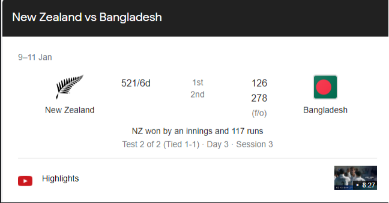

How does Google make money?
Well despite anything you may have heard about the search giant and its diversified service portfolio, the unanimous answer here is advertising.
More than 80% of Alphabet’s revenue (Google’s parent company) comes from Google’s proprietary advertising services.
So while Google may have its fingers in many pies parts, it is still an advertising company above all else.
And that means a lot of people depend on Google.
Including news publishers. These are the good folks that bring you ‘the News’ — via newspapers/TV or and through their many websites. They spend enormous amounts of money, time, and effort in a bid to keep you up to date. They pay for the studios, offices and employ thousands of journalists, editors and reporters to get the job done. But in this day and age, they are still ultimately at the mercy of Google.Two-thirds of their total revenue is attributable to advertising alone and only a third of their revenue comes from subscriptions. Then there’s the fact that a prominent source of traffic comes from online search engines (more than 50%). And guess who dominates the search engine department?
Google!!!
And over the years, these organisations have cultivated a sort of love-hate relationship with the search giant. On the one hand, they love the fact that Google can direct enormous traffic their way and introduce them to a wide array of readers. On the other hand, they are also not pleased with how Google shares revenue.
Google’s ad engine is opaque, its revenue-sharing model abstruse and the company will never divulge details about its algorithm. If there was ever a one-sided relationship, this is it. And it’s becoming more one-sided as we speak.
Here’s one example. Suppose you search for something as unassuming as “New Zealand vs Bangladesh.” This seemingly casual search will yield a host of information, right from scores to team compositions, to news articles previewing the match. Everything right there on Google’s search page ostensibly pulled from data that originated in dozens of sports websites. It's called Zero click search. And when you have Google so meticulously spoon-feeding you all this information, it’s unlikely you’ll click on the actual links generated by the query.
And granted, this is extremely convenient for people. In fact just as I was editing this article, I had to check the lineup for a football match and I did it on Google’s search page. I didn’t have to go to the source website. However, for news publishers, this is a lost opportunity to make money. Google already takes a massive cut from the ads they list on the news websites. Now they are serving information collated by these very publishers and taking home all the ad revenue. No sharing here . This should also explain why Google is prioritizing zero-click searches. Indian news publishers contend that the share of
zero-click searches has gone up from 50% in june 2019 to 65% between January and December 2020.
And that brings us to the present.
Something had to give. And on December 7th, India’s competition watchdog, the (CCI) opened up a new antitrust investigation against Google at the behest of the (DNPA). DNPA is a coalition of legacy media organisations such as:
who want to take the fight to Google. CCI meanwhile wants to see if Google has abused its dominant position in the market.
And here’s the thing. This isn’t just happening in India. It's happening across the globe. Almost a year ago this is what the chairman of the Australian Competition and Consumer Commission had to say after putting together a code that mandated Google to share revenue with news publishers — “There is a fundamental bargaining power imbalance between news media businesses and the major digital platforms, partly because news businesses have no option but to deal with the platforms, and have had little ability to negotiate over payment for their content or other issues. We wanted a model that would address this bargaining power imbalance and result in fair payment for content.” So far, the code has worked quite well for Australian publishers and seven major media houses have signed multi-year content deals with Google and Facebook. So yeah, maybe we will finally see some regulatory resistance to Google’s overarching influence on every online news organisation in the country. And maybe we will see them get their fair share of the revenue as well.